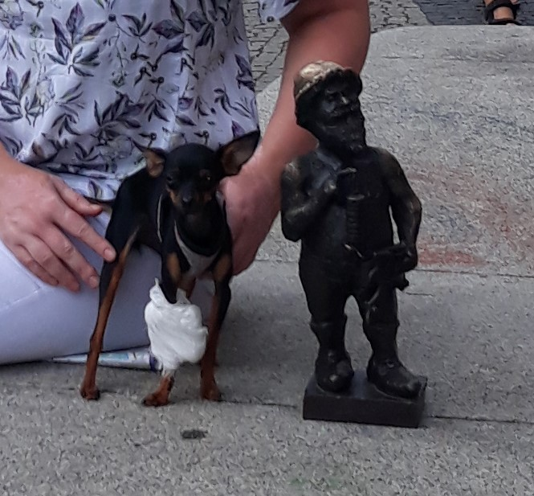

История Вроцлава невероятно сложная.
На протяжении последних 1000 лет он входил в состав
восьми разных королевств и империй.
Город уютен и живописен, полон достопримечательностей,
памятников архитектуры и с ним связано немало интересных исторических событий.
Но есть у этого города и еще одна изюминка.
Причем очень необычная и очаровательная. Вроцлав полон гномов.
Их можно повстречать здесь повсюду и все они – разные!
В настоящее время во Вроцлаве поселилось более 300 гномов.
В книжных и туристических магазинах можно купить путеводители по гномикам,
а для детей — раскраски с загадками, которые помогают лучше узнать город и его историю.
Адреса, пароли, явки вроцлавских гномов

Вроцлав и гномы.
Адель и гном
Есть один день в году, когда выражение «Вроцлав – город гномов» приобретает
дополнительный смысл.
В первые выходные сентября город устраивает фестиваль гномов
с массой развлечений!